train_16858_0065
A white car parked at the left side of the road named Eden street, A sky blue car parked behind it and a grey car with black roof parked in front of it.
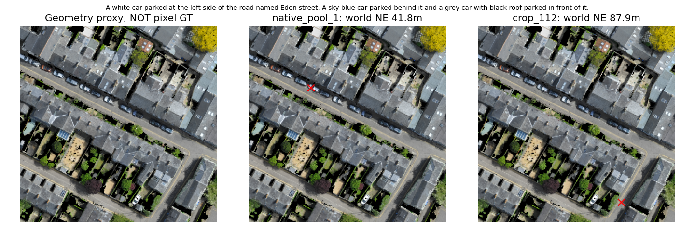
绿色仅Contour几何代理，不是像素金标准；红叉为盲排序Top1。24个TRAIN拟合目标末参考帧，不是闭环或独立确认。
A white car parked at the left side of the road named Eden street, A sky blue car parked behind it and a grey car with black roof parked in front of it.

The dark car parallel to a teal car with another dark car parked in front of it.
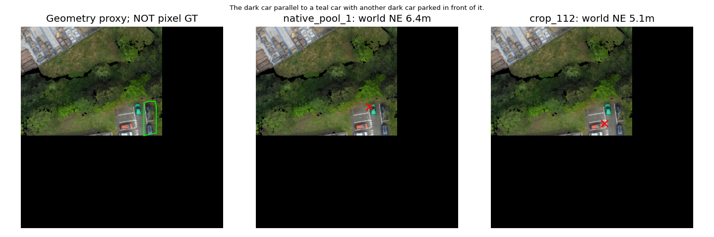
One white car in between a white van and a gray car near the corner of Birchfield Road and Thornbury Road, next to a multicolored white and brown building with three separate colored roofs, left side dark gray, Center White and right side Gray
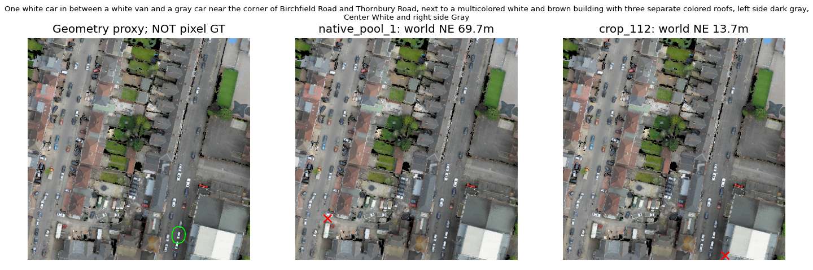
A blue car parked in the rightmost section of cars, the twelveth car from the entrance in the Grafton West parking. It is parked between a longer blue car and a black car and the stip of grass lawn begins behind it.
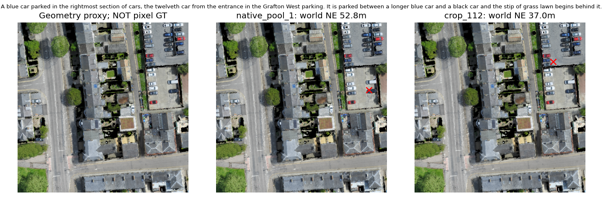
A black car parked on the left Lane. It has a white car in front of it at a pavement parking along walnut tree Avenue footpath.
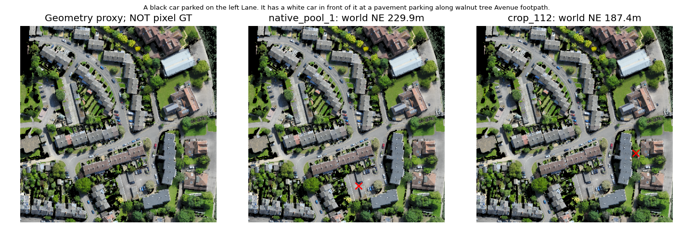
This silver / gray car is parked right at the entrance of the police custody Suite as you're pulling up and turning left off Holford Drive it is the second car to the right. It is in between another black car on a grassy patch area and to the left of it there's a blue car
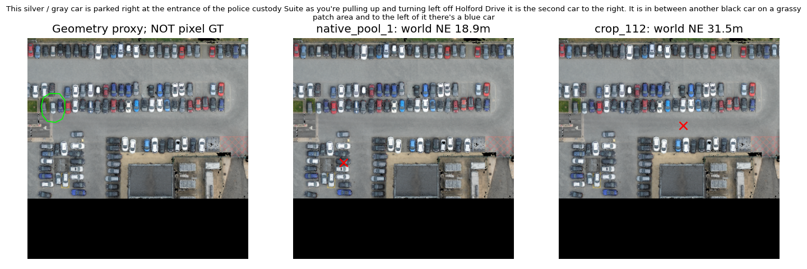
This is shown as a building, but the roofs are marked together with 3 different structures. These buildings are in the corner of Magdalena Street with Northampton Street. The first building in the corner has a triangular roof and white wall. Behind this structure is Cory House. The second building after this structure is entirely on Magdalena Street and the triangle has 3 windows on the roof. After this building, there is a building with a triangular roof with white walls.
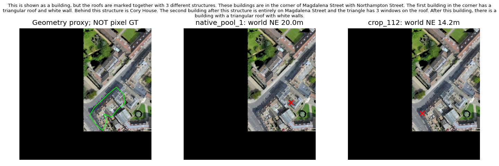
Three tier white and brown building with a gray roof, that has one blue car, one white car and one black car parked in front of it, off Grosvenor Road beside the edge of the map
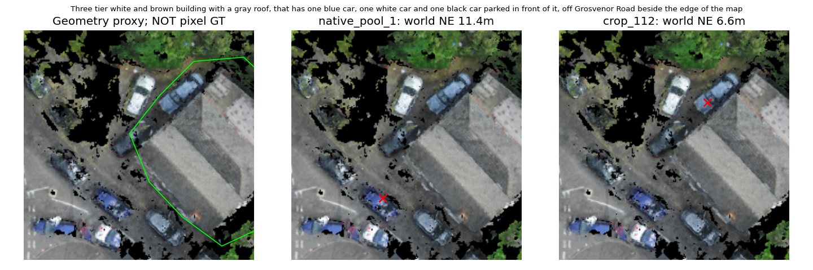
The tan building with the black roof that is beside the Corpus Christi College Chapel and has a large white stage in front of it.
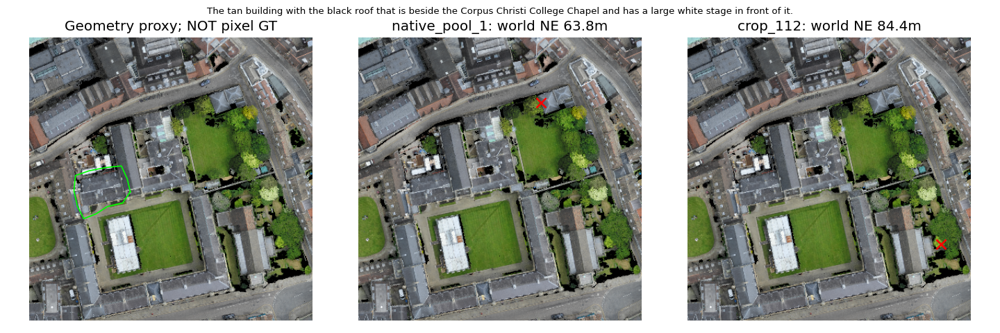
The large building on Wellington Rd / Grosvenor Rd that has a parking lot beside it and a white box in the backyard in front of the Full Circle Events & Exhibition Ltd building.
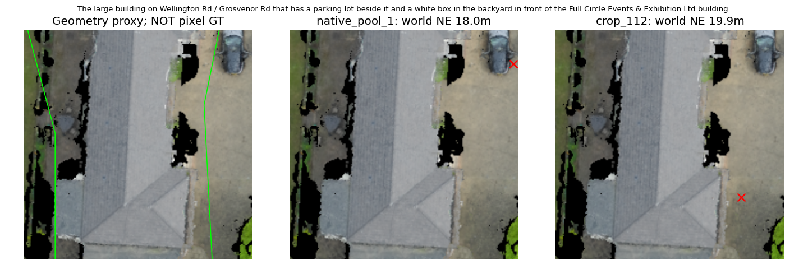
This is a residential place with a gray roof. Behind it runs John Street and in front of it runs Brandon Place. There is a red car parked behind this building.
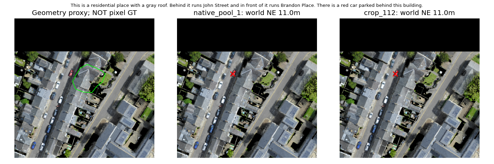
The gray house on Burton Wood Drive that is 3 houses to the left of the large gray building at the intersection with Livingstone Road.
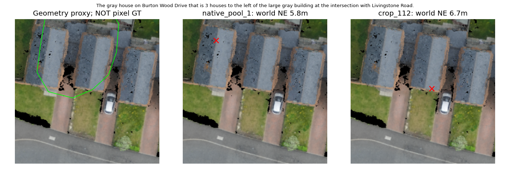
Rectangular grass section with a row of four trees on it near the edge of the map, next to the Browns-Cambridge building, off trumpington Street across from the Fitzwilliam Museum
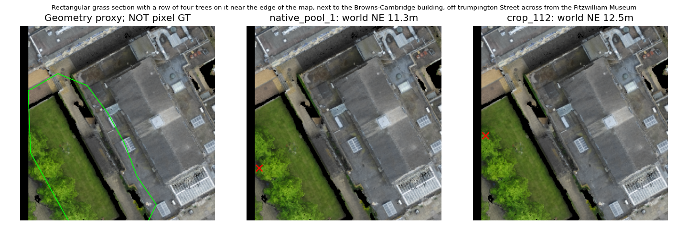
Section of rectangular grass field in between the botany building and the courtyard building, that has two red cars parked in front of it off corn Exchange Street
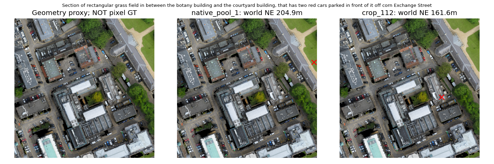
The ground on the far side of the path that runs from the Kettle's Yard Gallery to Honey Hill.
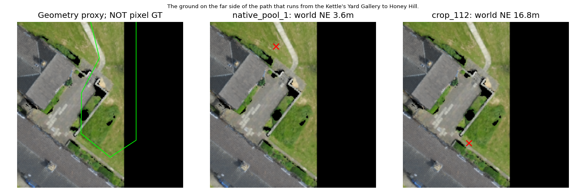
Grassfield that's been divided into two parts, next to the o Block building, in between the pickerel building in the Lutyens building off Bridge Street
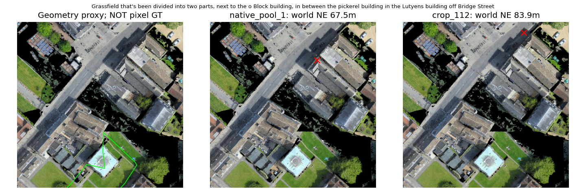
this is green space. this area is one of the two areas located on the corner of the old library building and the building behind the bridge of sighs. this area is the one far from the old library building.
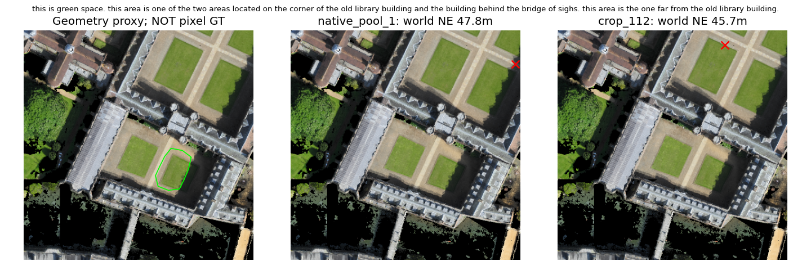
The ground surrounded by trees in front of the building named Master's Lodge, another big ground named The Paddock is at the northern side of it.
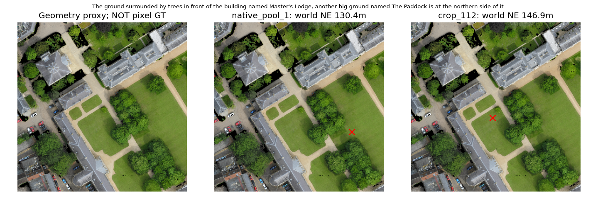
A parking lot off of Portugal Street. It is behind a long white and gray building with a gray peaked roof. Five cars are parked here. The building it is behind is two doors down from the corner of Portugal Street and New Park Street.
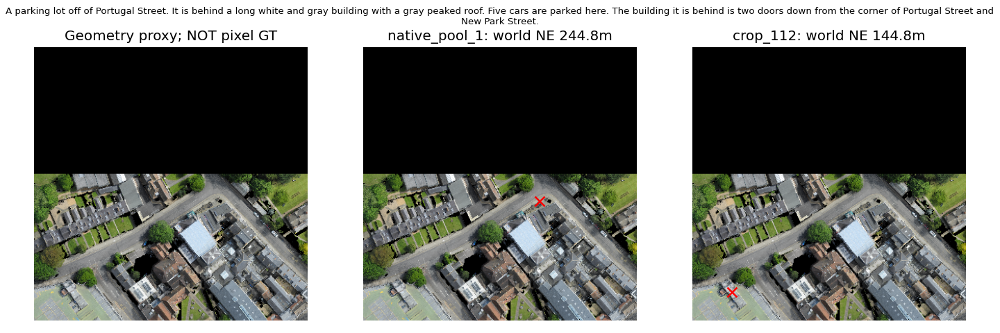
The parking lot of the corner building that located on the Station Bridge Road and Wellington Road.
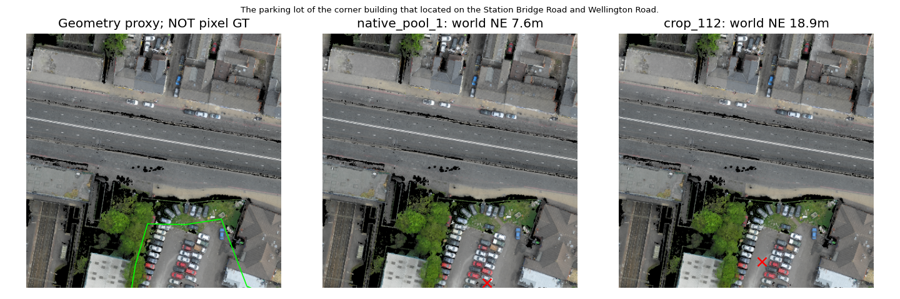
this is a parking area, there are no cars in this area. This area is by James Street, with a white car in front of it.
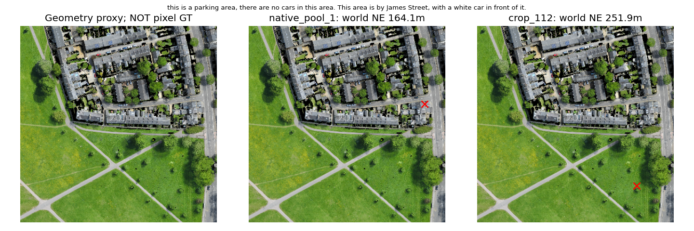
This is a parking space around Emmanuel College Library. It is also shared by Camden House and a beige building with a gray rooftop.
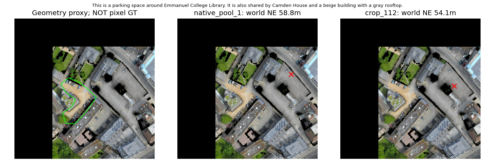
A triangular parking lot in between a multi-colored Brown, green, blue and Gray Building with a large gray roof, and the Perry barr bus depot
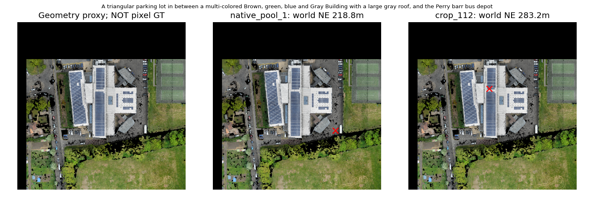
A big, mostly empty parking lot located between Timet and a strip of land covered with bushes and trees. There are some pallets and containers in the parking lot, no cars.
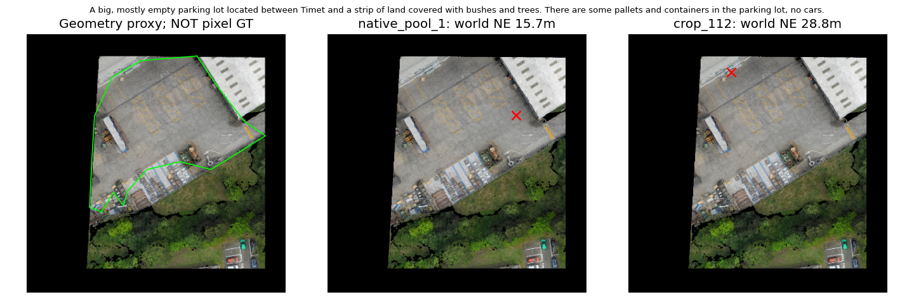